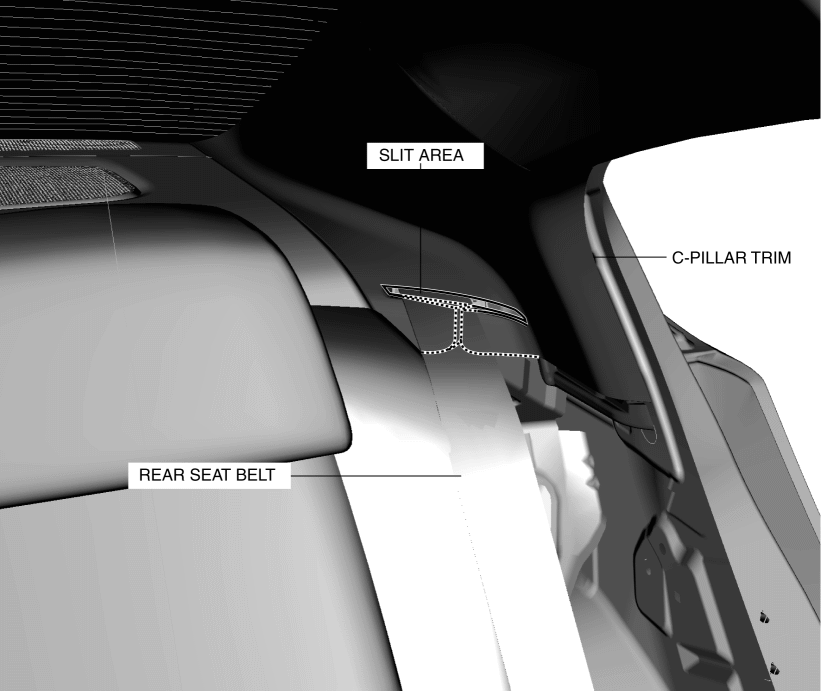
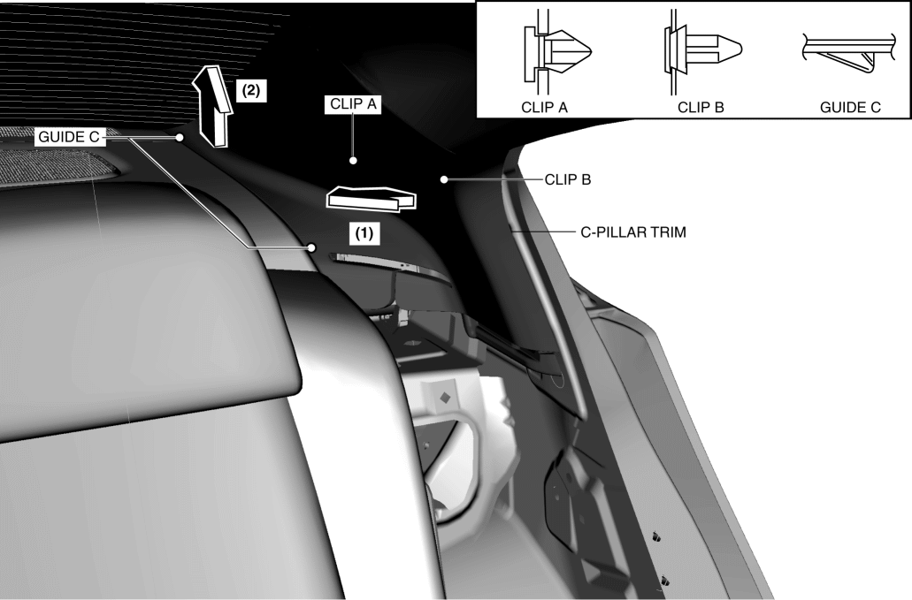

< Previous
Next >
2014 -
Mazda6 -
Body and Accessories
C-PILLAR TRIM REMOVAL/INSTALLATION
1. Remove the following parts: a. Rear scuff plate (See REAR SCUFF PLATE REMOVAL/INSTALLATION.)
b. Rear seat cushion (See REAR SEAT CUSHION REMOVAL/INSTALLATION.)
c. Rear side seat back (See REAR SIDE SEAT BACK REMOVAL/INSTALLATION.)
d. Tire house trim (See TIRE HOUSE TRIM REMOVAL/INSTALLATION.)
2. Set the rear seat belt aside from the slit area shown in the figure.

3. Pull the C-pillar trim in the direction of the arrow in the order of (1), (2) while detaching clip A, clip B and guides C.

4. Install in the reverse order of removal.
< Previous
Next >
© 2012 Mazda North American Operations, U.S.A.